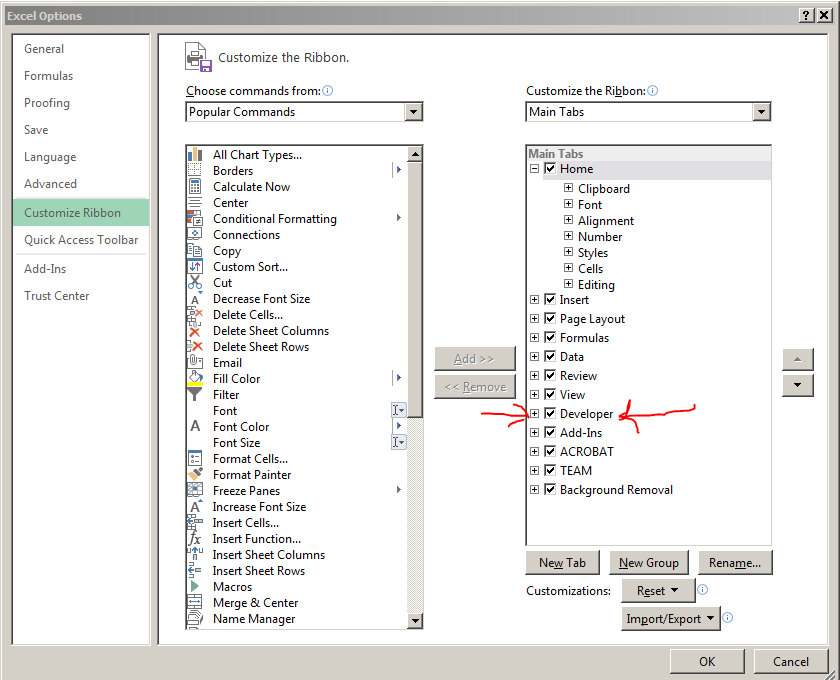
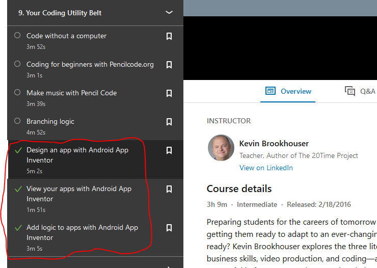
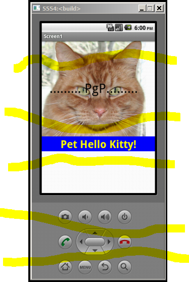
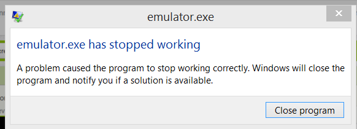
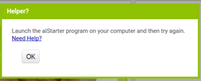

After completing this assignment you will be able to use a computer to
The purpose of this assignment is to learn the basic concepts of programming. For this task we will use a version of Visual Basic, known as Visual Basic for Applications, a component of most office applications. We will use VBA for Excel-also known as "Macros". In addition we will develop an application for an Android phone-and run it on an emulator. If you have an Android device you could install it on that. Familiarity with programming is a valuable skill-it allows you to understand what programmers do, and enables you to communicate better with them. Some additional considerations are:
This assignment will cover three programming methods. Knowledge of programming is a key to automating tasks that can increase your productivity, efficiency and save you time.
Background info on Macros-Windows:- https://www.linkedin.com/learning/excel-macros-and-vba-for-beginners/ Mac Excel Macros: https://www.linkedin.com/learning/excel-for-mac-2016-macros/
Enable Macros in Windows! From the menu choose File>Options>Customize Ribbon> ...in the right colum check "Developer" 
Record a macro that adds your name to the Header or Footer of the current Excel Worksheet. Make sure to specify an appropriate font, and least 18 point, and have the text centered on the page. When done recording, press Alt+F11 and open the VBA IDE (Visual Basic for Applications Integrated Development Environment.
(50) 1. Why is so much code needed to add a header or footer to a worksheet?
Create a macro that will return the Square Root of a number in the cell currently selected. If you get a run time error "type mismatch" you probably had text in the selected cell. Hints:
(100) 2. When done copy and paste the major line of code below. Do not worry if it does not all fit in the text box.
(100) 3. After creating the Square Root macro, display the VBA IDE (remember Alt+F11). Make a screen shot of your IDE displaying the code and immediate windows. Save the screen shot as "Ex1" in your ' ' folder.
Learn to use the VBA IDE Immediate Window to evaluate code and functions quickly. Open the Excel VBA IDE (Alt+F11), type in the following code, and press enter to evaluate the expression.
? 3.9*7.6/5.6+1.89
ref: Python for non-Programmers at LinkedIn Learning
This assignment illustrates the value of Python programming. In Project04-IoT13-Python is used to connect to sensors and actuators. Python can be used to write the data to the screen, to speak the results, to record this data locally, or to send it to the cloud. Note-in the following exercise you must create a new project or application, do not create a Python application as part of a website.
Note: this exercise just scratches the surface of what you can do with Python. Python combined with IoT devices, and data analysis, is creating lots of opportunities and disruptions in our world.
Android AppInventor
LinkedIn Learning AppInventor 
Android apps- AppInventor website
Background at Wikipedia: http://en.wikipedia.org/wiki/Google_App_Inventor
You will use Google's AppInventor to create an application for a mobile Android device.
For an App Inventor overview, read this material: http://appinventor.mit.edu/explore/get-started.html i. First download and install App Inventor 2 Note: you do not have to install the application on your phone, use the emulator. Read the instructions carefully, you may need to update Java on your laptop. Make sure to run AIStarter, connect to the emulator via the menu by choosing Connect>Emulator, and then do the required updating before proceeding to the next step!
ii. Follow these instructions to build your mobile application, Hello Purr. You first design the visual interface, then you program the behavior.
Make screen shots of your completed application in the "AppInventor" IDE (Integrated Development Environment), and emulator. Make sure to include the 'Non Visible Components'-you may have to scroll down.
Optional: Additonal tutorials: http://appinventor.mit.edu/explore/ai2/tutorials.html
Do the Course: http://www.appinventor.org/course-in-a-box_teaching
The emulator looks something like this when running:

Notes:
Troubleshooting: see this url: http://appinventor.mit.edu/explore/ai2/connect-help-emulator.html
The AppInventor program and emulator may be problematic. You may need to reboot your computer. You may encounter several different error messages. This is a great opportunity to hone your troubleshooting skills:


(50) 6. Make a screen shot showing the IDE in Design View. Save the screen shot as "Ex4-1" in your ' ' folder.
(50) 7. Make a screen shot showing the IDE in Blocks View. Save the screen shot as "Ex4-2" in your ' ' folder.
(100) 8. Make a screen shot showing the running Emulator with the Hello Kitty app running. Save the screen shot as "Ex4-3" in your ' ' folder.
Use a web browser to verify that you have published your website to https://classes.winona.edu/... Check that your name, StarID, email, class, semester, section and all of your answers are correct and visible. From the menu choose File>Print... and using "Microsoft Print to PDF" save a copy of this assignment as a .pdf file in your ' ' folder.
(50) 9. Save your file 'WebPage.pdf' to the ' ' folder.
Create a .pdf file named 'screenshots.pdf' by combining the above screenshots.
Refer to Formative00 and either: Method 1- use File Explorer to drag all screenshots into a blank Word document, and print the document as 'screenshots.pdf' or Method 2- use File Explorer to select all screenshots, righ click and select 'Print' and print the document as 'screenshots.pdf'
(50) 10. Save your file 'ScreenShots.pdf' to the ' ' folder.
Use PDFill to merge the WebPage.pdf file with the ScreenShots.pdf file, and save it as 'Summative11.pdf' in ' ' folder.
(50) 11. Upload your file 'Summative11.pdf' to the D2L 'Summative11' Assignment folder.
Use a browser to view your completed and published website at: https://classes.winona.edu/... Ensure that you have linked this assignment on your home page. Note that your screen shots do not have to be completed to perform this step.